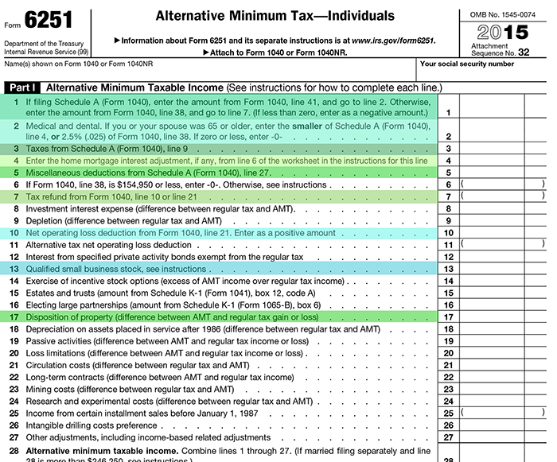

The primary thing you need to know about the AMT calculation is that it does not use the same Taxable Income figure as was used in the regular income tax calculation. Rather, it makes a series of adjustments to income for what are deemed tax preference items. These adjustments, which are typically added back to income, will likely result in an AMT Income (AMTI) that is higher than the one computed with the regular income tax calculation. Since the tax calculation is different, the fact that AMT Income may be higher than regular Taxable Income does not always result in a higher tax, but the likelihood of a higher tax increases if the adjustments are sizeable.
The first section of this Form 6251 is provided below. This is where adjustments are made for tax preference items to derive AMT Income, on which the alternative tax calculation will be made. Take a few minutes to read through the tax preference items in this section. We have highlighted the more common adjustments.
Click the highlighted lines on the form to learn more.
